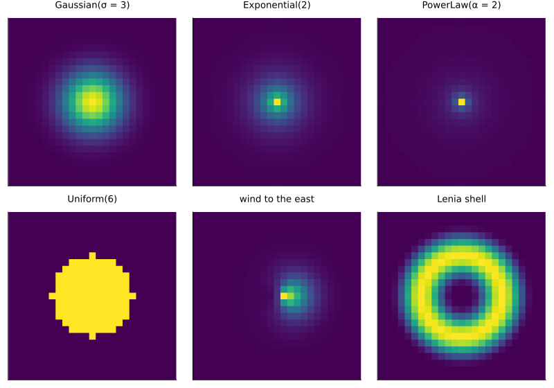
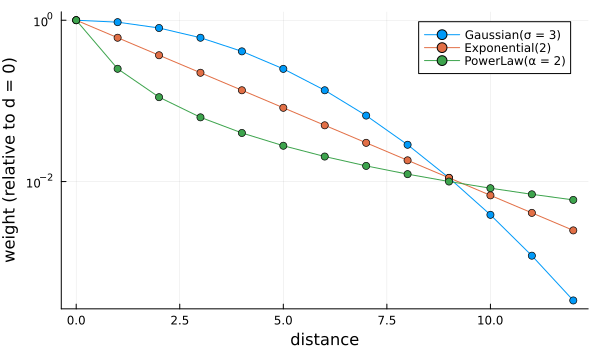
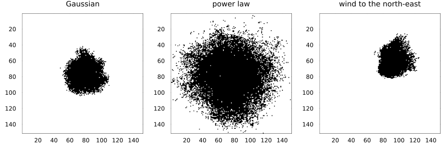
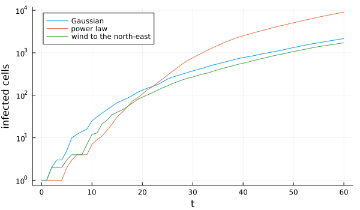
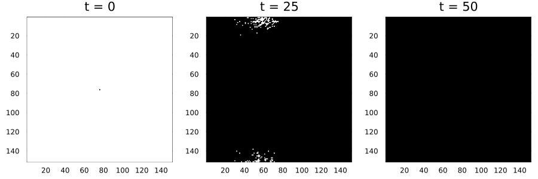

Dispersal kernels
Simon Frost
- Overview
- Kernel shapes
- An invasion driven by a kernel field
- Fields and ordinary neighbours together
- Direct sums and FFTs
Overview
Spores, seeds and insects do not only reach adjacent cells: they disperse over distances described by a dispersal kernel, and occasional long jumps change how fast an invasion spreads. Writing a rule over a neighbourhood of hundreds of cells would be slow and awkward, so CellularAutomataCore.jl separates the two:
- a
KernelField(kernel, source)is recomputed at the start of every step: at each cell, the kernel-weighted sum ofsource(state)over the cells around it, for example the density of infectious cells within dispersal range; - the rule reads it with
field(ctx, name)alongside its ordinary neighbours.
ENV["GKSwstype"] = "100"
using CellularAutomataCore
using Plots
using Random
using FFTW # enables method = :fft for wide kernelsKernel shapes
Every kernel assigns a weight to each offset within its radius; kernel_weights lists them, normalised to sum to one. Distances are in cell widths.
function kernel_image(k; r=12)
offsets, weights = kernel_weights(k, Torus(2r + 1, 2r + 1))
m = zeros(2r + 1, 2r + 1)
for (o, w) in zip(offsets, weights)
m[CartesianIndex(Tuple(o) .+ (r + 1))] = w
end
return m
end
kernels = ["Gaussian(σ = 3)" => GaussianKernel(3.0; radius=12),
"Exponential(2)" => ExponentialKernel(2.0; radius=12),
"PowerLaw(α = 2)" => PowerLawKernel(2.0; radius=12),
"Uniform(6)" => UniformKernel(6),
"wind to the east" => AnisotropicKernel(GaussianKernel(3.0; radius=12), 0.0, 2.0),
"Lenia shell" => LeniaKernel(12)]
plot([heatmap(kernel_image(k); title=name, titlefontsize=9, aspect_ratio=:equal, yflip=true,
colorbar=false, ticks=false, c=:viridis) for (name, k) in kernels]...;
layout=(2, 3), size=(800, 560))
On a log scale the tails differ by orders of magnitude: the power law keeps far more weight at long range.
d = 0:12
plt = plot(; yscale=:log10, xlabel="distance", ylabel="weight (relative to d = 0)",
size=(600, 350))
for (name, k) in kernels[1:3]
m = kernel_image(k)
plot!(plt, d, [m[13, 13 + x] / m[13, 13] for x in d]; label=name, marker=:circle)
end
plt
AnisotropicKernel(base, direction, strength) tilts a kernel towards a direction (radians: 0 is east, towards increasing column index, π/2 is north), for wind- or slope-driven dispersal. EmpiricalKernel(matrix) takes weights measured in the field.
An invasion driven by a kernel field
A minimal plant-disease model: a healthy cell (0) is infected (1) with probability $1 - e^{-\beta P}$, where $P$ is the kernel-weighted density of infected cells around it. Infected cells stay infected.
invasion = LocalRule() do cell, nbrs, ctx
cell == 1 && return cell
return bernoulli(ctx, 1 - exp(-ctx.p.β * field(ctx, :P))) ? one(cell) : cell
end
n = 151
u0 = zeros(Int8, n, n)
u0[76, 76] = 1
function run_invasion(kernel; β=0.4, T=60, seed=1)
fields = (P=KernelField(kernel, ==(1); method=:fft),)
return solve(CAProblem(invasion, u0, T, (β=β,); fields, seed); saveat=20)
end
fronts = ["Gaussian" => GaussianKernel(1.5; radius=8),
"power law" => PowerLawKernel(3.0; radius=20),
"wind to the north-east" => AnisotropicKernel(GaussianKernel(1.5; radius=8), π / 4, 2.0)]
sols = [name => run_invasion(k) for (name, k) in fronts]
plot([plot(sol; snapshot=4, c=:binary, colorbar=false, title=name, titlefontsize=10)
for (name, sol) in sols]...; layout=(1, 3), size=(900, 300))
After 60 steps the Gaussian invasion is a compact patch around its source. The fat-tailed power law has spread several times as far, ragged at the edges because long jumps seed outlying infections ahead of the main front, and the wind-tilted kernel has carried the invasion towards the north-east. The number infected grows steadily under the thin-tailed kernels and accelerates under the power law:
plt = plot(; xlabel="t", ylabel="infected cells", yscale=:log10, size=(600, 350))
for (name, k) in fronts
sol = solve(CAProblem(invasion, u0, 60, (β=0.4,); seed=1,
fields=(P=KernelField(k, ==(1); method=:fft),)))
plot!(plt, sol.t, [max(sum(u), 1) for u in sol.u]; label=name)
end
plt
Fields and ordinary neighbours together
A rule can combine a field with its neighbourhood: here infection needs either an infected von Neumann neighbour (contact spread) or wind-borne spores, with separate rates:
two_routes = LocalRule(VonNeumann(1)) do cell, nbrs, ctx
cell == 1 && return cell
contact = count(==(1), nbrs)
λ = ctx.p.contact * contact + ctx.p.airborne * field(ctx, :spores)
return bernoulli(ctx, 1 - exp(-λ)) ? one(cell) : cell
end
spores = (spores=KernelField(AnisotropicKernel(ExponentialKernel(3.0; radius=25), 0.0, 1.5),
==(1); method=:fft),)
sol = solve(CAProblem(two_routes, u0, 50, (contact=0.4, airborne=1.0); fields=spores, seed=2);
saveat=25)
plot([plot(sol; snapshot=i, c=:binary, colorbar=false) for i in 1:3]...; layout=(1, 3),
size=(900, 300))
Direct sums and FFTs
A kernel field can be computed directly, summing over the kernel’s offsets at every cell, or by fast Fourier transform. The two agree to rounding error; the FFT needs using FFTW and a lattice that is periodic on every axis, and is much faster for wide kernels.
x = rand(Xoshiro(1), 256, 256)
probe = LocalRule((c, nbrs, ctx) -> field(ctx, :f))
for method in (:direct, :fft)
prob = CAProblem(probe, x, 1; fields=(f=KernelField(GaussianKernel(6.0), identity; method),))
solve(prob) # compile
t = @elapsed s = solve(prob; save_everystep=false)
println(rpad(method, 8), round(t * 1000; digits=1), " ms")
end
fd = final_state(solve(CAProblem(probe, x, 1; fields=(f=KernelField(GaussianKernel(6.0)),))))
ff = final_state(solve(CAProblem(probe, x, 1;
fields=(f=KernelField(GaussianKernel(6.0); method=:fft),))))
maximum(abs.(fd .- ff))direct 29.7 ms
fft 1.0 ms
2.220446049250313e-15Kernel fields read beyond the edges of a bounded grid by its boundary conditions, like ordinary neighbours: beyond a Constant(0) edge nothing disperses in, beyond a Reflecting one the landscape is mirrored. The direct method handles every boundary; the FFT method requires a torus.